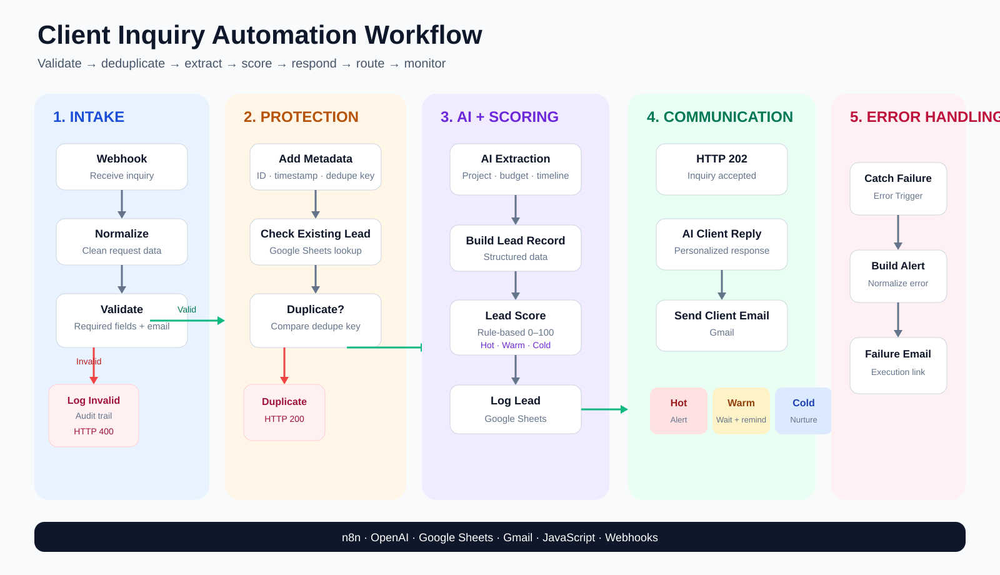
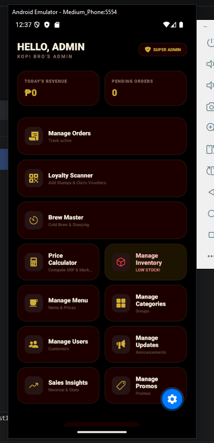
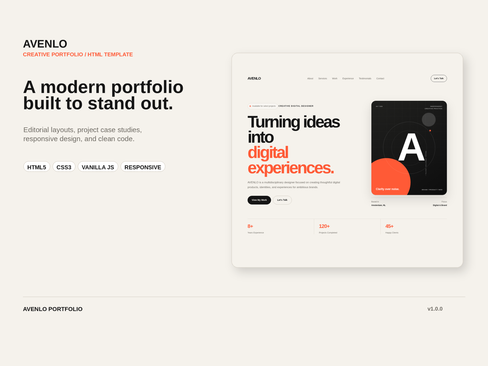
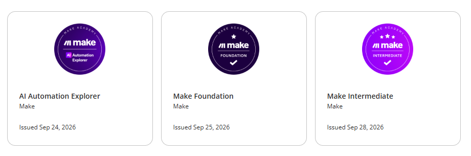

AI Recruitment & Candidate Pipeline
Processes candidate emails, prevents duplicate records, supports recruiter actions, drafts messages, and schedules follow-ups.
Proof4 workflows · 4/4 sanitized exports
Software Developer · AI Automation · IT Support
I have 6+ years of hands-on experience across software development, technical support, and small-business technical operations. I build practical software and workflow automations that connect tools, reduce repetitive work, and solve day-to-day technical problems.
Based in the Philippines · Working across software, automation, and practical IT systems.
The tools changed. The responsibility didn’t.
Tech Stack
 HTML5
HTML5
 CSS3
CSS3
 JavaScript
JavaScript
 React
React
 React Native
Firebase
React Native
Firebase
 Git
Git
 C#
C#
 Java
Java
 MySQL
MySQL
 n8n
Make
Docker
Self-Hosted n8n
APIs & Webhooks
OpenAI
n8n
Make
Docker
Self-Hosted n8n
APIs & Webhooks
OpenAI
Selected Projects
Software, automation, and web projects I have built, tested, or shipped.
Business workflows built with validation, human review, and practical failure handling.
Processes candidate emails, prevents duplicate records, supports recruiter actions, drafts messages, and schedules follow-ups.

Turns incoming inquiries into structured leads, applies clear scoring rules, stores records, and routes follow-up actions.
Monitors stock levels, creates one reorder list, calculates inventory health, and sends scheduled alerts and summaries.
Application and website work across mobile, desktop, databases, and responsive front-end delivery.

Multi-user café operations prototype for orders, inventory, sales insights, loyalty, rewards, and customer history.
Restaurant desktop system covering cashier transactions, kitchen status, ingredient inventory, reporting, logs, and database utilities.

Three responsive static web products built, documented, and deployed as independent releases.
Development Activity
Code, documentation, and automation repository updates.
GitHub contribution activity · loading recent updates…
Beyond Commits
Platform learning, tested workflows, and systems work that a GitHub graph cannot fully represent.
Software, automation, and web projects.
Tested business workflows.
4 n8n certificates + 3 Make Academy badges.
Available for remote opportunities.
About
I graduated with a BS in Information Technology, major in Software Engineering. My background includes professional programming work, freelance technical projects, small-business technical operations, web products, and current AI automation work.
STKR Maniac Printing Services — client production, Photoshop, printers, computers, software, and day-to-day troubleshooting.
Small software and web projects, implementation, debugging, troubleshooting, and revisions for students and local clients.
Worked on application logic, database-related functions, troubleshooting, and technical documentation within existing systems.
Major in Software Engineering · STI College Global City · 2019
4 course certificates completed · workflow fundamentals, integrations, APIs, AI, testing, and best practices.
3 Make Academy badges completed across workflow automation, AI automation, and intermediate scenario building.

AI Automation and API Integration — including n8n Cloud, self-hosted n8n with Docker, completed Make Foundation and Intermediate coursework, routing and mapping, iterators, HTTP/API modules, variables, testing, and recovery basics.
Contact
Open to software development, AI automation, API integration, and IT support opportunities.